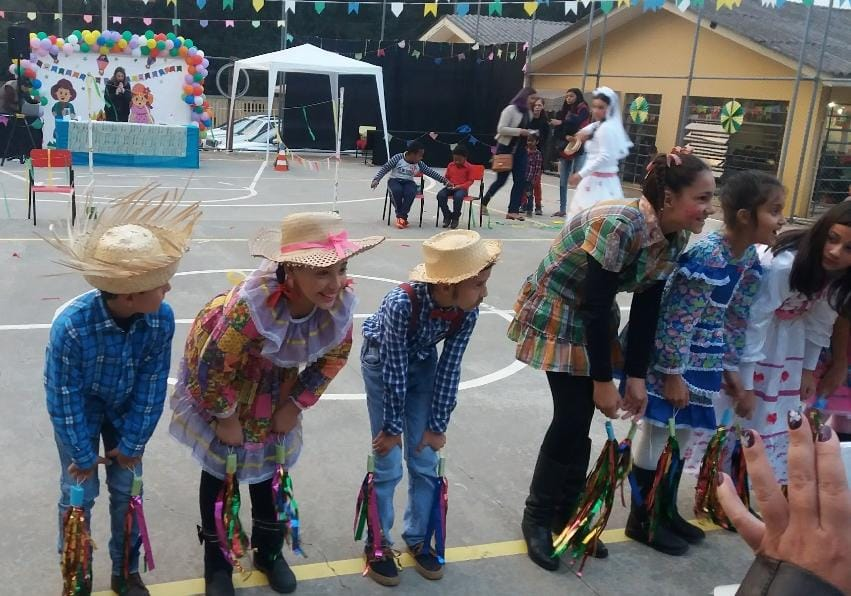

Pré-Escola
Uma memória que eu tenho da pré-escola é quando era dia das crianças e eles colocaram uma peruca em todos os alunos e depois fizeram muitas brincadeiras e eu adorava.

Ensino Fundamental
Minha favorita do ensino fundamental era as festa junina, todo mundo ficava animado e todos os anos eu dançava, a professora de educação física ensinava a dança pra gente a escola toda ficava decorada no tema e eu amava.
Ensino Médio
Em 2015, finalizei o ensino médio. A formatura foi um dia inesquecível, cercado por amigos e professores.